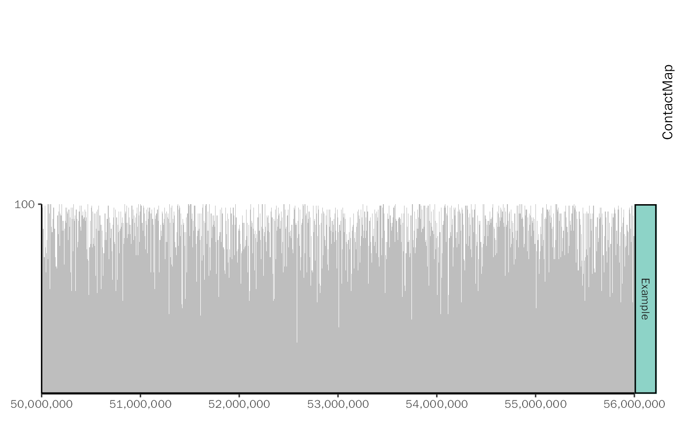

geom_tad2.RdAdd Contact Map to Coverage Plot.
geom_tad2( matrix, granges, zlim = NULL, color.bias = 1, color.ramp = "YlOrRd", color.palette = NULL, smooth.func = NULL, plot.space = 0.1, plot.height = 1, top = TRUE, show.rect = FALSE )
| matrix | Matrix (n x n) contains contact map information. |
|---|---|
| granges | The rownames and colnames information of matrix. |
| zlim | The maximum value of color to plot. Larger values will be truncated to this value. |
| color.bias | Bias parameter for color palette, it is the same as |
| color.ramp | A name of a color palette, choose from rownames of |
| color.palette | A vector of colors. Overwrites the palette for |
| smooth.func | An optional smoothing function for the matrix. Default: NULL. |
| plot.space | Top and bottom margin. Default: 0.1. |
| plot.height | The relative height of contact map to coverage plot. Default: 1. |
| top | Logical value, whether to place this plot on the coverage plot. Default: TRUE. |
| show.rect | Logical value, whether to add rect border to the plot. Default: FALSE. |
Plot.
library(ggcoverage) library(HiCDataHumanIMR90) data(Dixon2012_IMR90, package = "HiCDataHumanIMR90") mat <- as.matrix(hic_imr90_40@.Data[[1]]@intdata)#>#>#>#> #>#> #> #>#> #> #> #> #> #> #> #>#>#>#> #>#> #> #>#>#>granges <- hic_imr90_40@.Data[[1]]@xgi # prepare coverage dataframe df <- data.frame( seqnames = "chr1", start = seq(from = 50000000, to = 59999000, by = 1000), end = seq(from = 50001000, to = 60000000, by = 1000), score = sample(1:100, 10000, replace = TRUE), Type = "Example", Group = "Example" ) # create plot ggcoverage( data = df, color = "grey", region = "chr1:50000000-56000000", mark.region = NULL, range.position = "out" ) + geom_tad2(matrix = log2(mat + 1), granges = granges, zlim = 5, color.palette = c("blue", "red"))#>